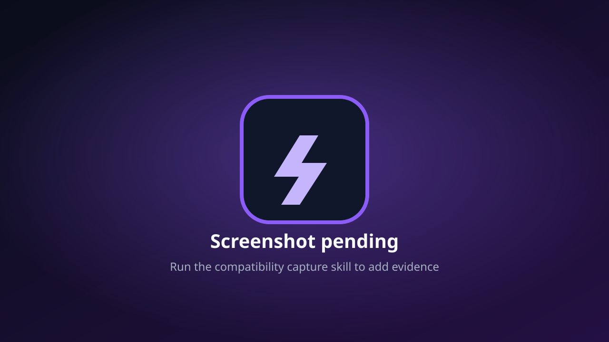

PlayableCompletable without major issues
Evidence-first compatibility
See what runs on Bachata S4
Browse one compact entry per CUSA ID, then open the title to compare release-specific results, selected devices, exact Turnip versions, FPS, screenshots, and logs.
IngameGameplay works with major issues
MenusReaches menus, not gameplay
BootsVisual or audio output before menus
NothingCrash, hang, or black screen
Evidence-first compatibility
How to read these results
What is Bachata S4?
An experimental, open-source PlayStation 4 emulator project for ARM64 Android devices. This site publishes community compatibility evidence for how well individual titles run on it. It is not affiliated with Sony Interactive Entertainment and does not provide games, firmware, keys, or copyrighted console content.
Results are configuration-specific
Every report is tied to a specific emulator release, device, SoC, GPU, Android version, guest backend, and graphics driver. A result on one phone or driver does not guarantee the same result on another.
How evidence is collected
Testers launch legally owned titles on a recorded release and driver, capture screenshots, logs, and performance measurements, and record the furthest status observed. Each title links to its canonical GitHub discussion, and full report evidence is stored in the compatibility repository.
Status meanings
Playable — no major blocker found in the tested configuration. Ingame — controllable gameplay reached, completion not verified. Menus — reaches menus, not gameplay. Boots — output before menus. Nothing — crash, hang, or black screen.
Compatibility database
Find a game
Loading compatibility data…
0 games

No matching reports
Try changing the filters or add the first compatibility report using the repository skill.
Open game discussions